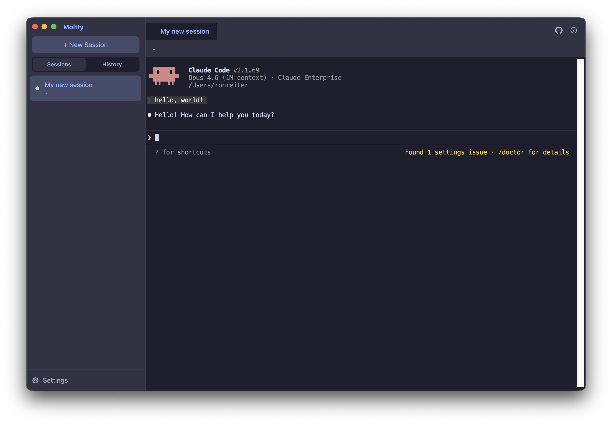

Moltty is an open-source native macOS app that gives your AI coding tools a tabbed, persistent terminal. Restart the app, reboot your Mac — every session picks up right where you left off.

Pick your tool on first launch — Claude Code, Gemini CLI, Codex, Aider, OpenCode, Copilot, or Amp. Switch anytime in settings.
Run multiple sessions in tabs. Drag to reorder. Switch with Cmd+Left/Right. Each tab is an independent terminal.
Close Moltty, restart your Mac, come back tomorrow — every session automatically resumes exactly where you left off. Works with all supported tools.
Browse and resume previous conversations. See the working directory, summary, and size of each session at a glance.
Catppuccin dark theme, WebGL-accelerated rendering, in-terminal search with Cmd+F, and a clean native macOS look.
Optionally loads your .zshrc so your PATH, aliases, and functions are available. Your full dev environment, ready to go.
Download, choose your tool, start coding.
The onboarding wizard lets you choose Claude, Gemini, Codex, or any supported tool.
Click "+ New Session", pick a folder, and your AI coding tool launches instantly.
Moltty is open source and welcomes contributions. Whether it's a bug fix, new feature, or documentation improvement — we'd love your help.
View on GitHub